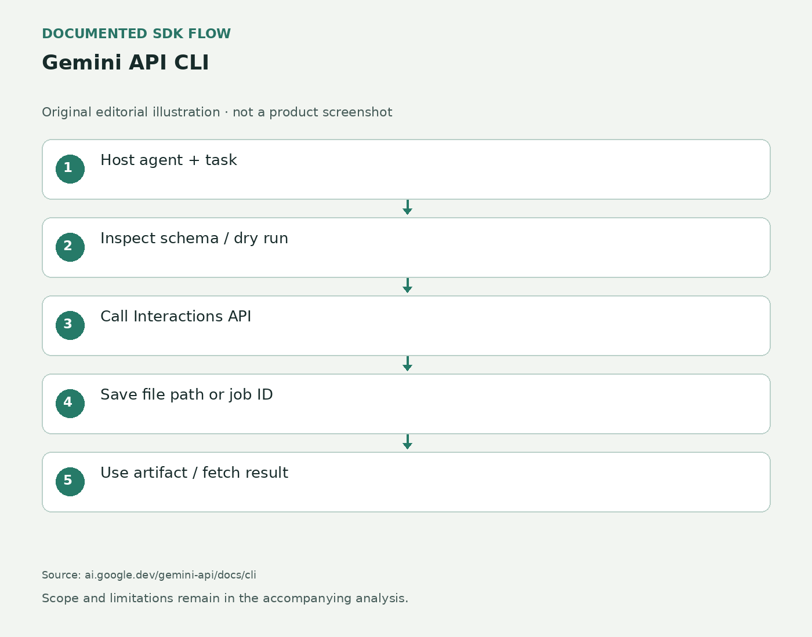

Gemini API CLI · 开发工具 · 官方更新
Gemini API CLI把生成素材和后台任务接进现有代理
2026-10-27 · · 采集 10-31 08:22Z

依据官方文档绘制的编辑流程示意；不是产品界面。 ↗ 原始图证从现有代理调用模型
Google在十月二十七日把gemini-api列为测试版发布。这个独立命令行客户端使用Interactions API，让已有编码代理、脚本或持续集成作业调用文本、图片、语音、音乐、视频和托管代理。外层代理仍负责规划任务、选择输入和使用结果，客户端负责把一次明确请求送到服务。它与交互式编码工具Gemini CLI是不同产品，不能将二者的功能或授权混为一谈。官方提供适用于macOS、Linux和Windows的独立二进制文件，因此工程可以在不加入语言SDK依赖的情况下调用模型；但模型访问凭证与网络服务仍是必要条件。
让路径和编号接住生成结果
多媒体输出直接写到磁盘，标准输出返回文件路径或结构化元数据，避免把大段编码素材塞入代理上下文。比如构建页面时，可先生成一张图，再将路径交给页面代码；转录则可输出字幕或结构化文字文件。视频任务能够异步返回交互编号，之后再续取结果；托管研究任务也有后台运行、查询状态和取消的入口。这种无隐藏本地会话的设计要求调用方保存文件引用、上一次交互编号及后台任务编号。工具退出不代表业务流程完成，外层任务必须检查状态与产物，再决定是否继续下一步或安排重试。
先查结构，再发请求
客户端把命令树和请求结构放在本地可查询入口，代理可先读取用法或JSON Schema，再构造请求。预演模式会验证输入、隐藏凭证并展示即将发出的HTTP请求，不产生网络调用。正常流程也可选择JSON、紧凑结构化输出或字段过滤，并通过退出码区分认证问题、参数错误与运行失败。命令参数与原始请求正文若重复设置同一个字段，会直接失败，避免不清楚哪个值生效。这里减少的是调用胶水工作，并不替代理判断任务是否合理；实际发送之前，权限、输入范围和费用控制仍属于接入应用的职责。
文件大小和协议划出适用范围
当前文档把内联文件限制为十四兆原始数据，更大的文件应先上传Files API，再复用返回的引用；上传文件四十八小时后删除，因此不能把该引用当作长期素材地址。客户端支持普通HTTP、服务器事件流与异步轮询，不支持实时双向WebSocket会话，语音视频直播仍应使用Live API和SDK。测试版的小版本之间可能出现破坏性变化，自动环境应固定发行版本，并为保存的命令与输出约定做兼容检查。工具本身的开源性质也不等于模型调用免费，具体可用模型、配额及计费仍由相应API账户决定。
← 回到项目，继续翻页